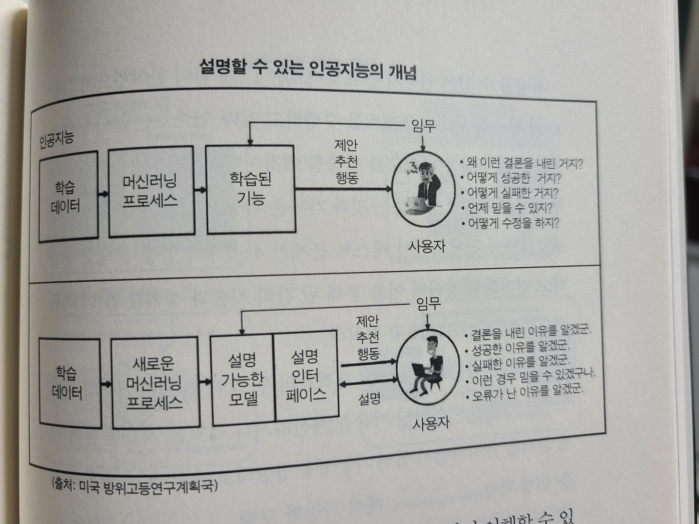
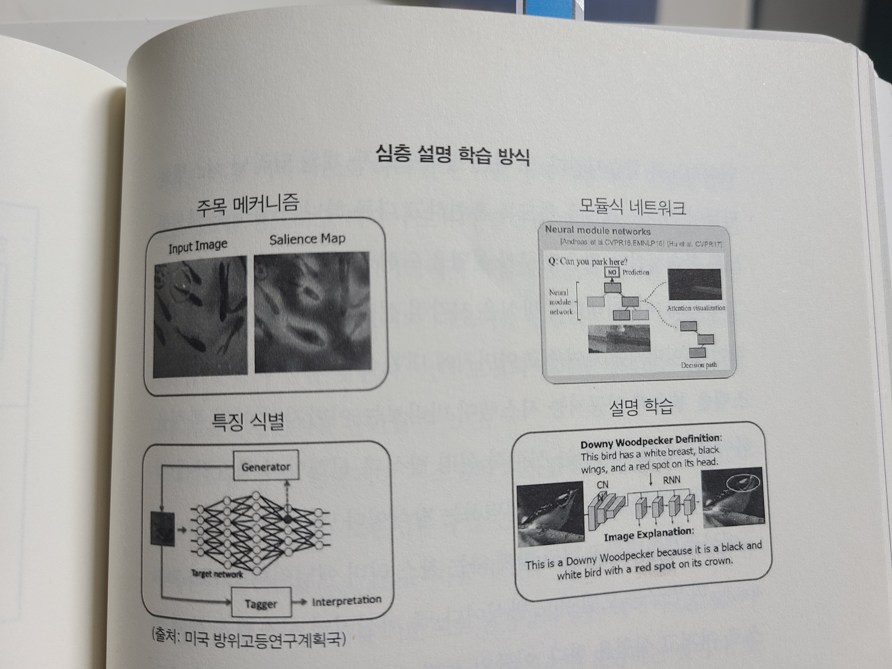

AiRS의 기술은 크게 2가지를 바탕에 두고 있습니다. CF(Collaborative Filtering, 협력 필터) 기술과 인공신경망 기술인 RNN(Recurrent Neural Network) 입니다.
비슷한 관심 분야를 가진 사람들이 본 콘텐츠를 추천하는 CF(Collaborative Filtering, 협력 필터) 기술은 우선 사용자들이 콘텐츠를 소비하는 패턴을 분석합니다. 그리고 비슷한 관심 분야를 가진 사용자를 묶어냅니다. 이 과정을 통해 나와 비슷한 관심사를 가진 사람들이 많이 본 콘텐츠를 먼저 선별해서 보여줍니다.
이 설명문만 읽고 일반인이 동작원리를 이해할 수 있을까?
인간은 다른 인간에게 어떻게 설명하고 있는가?
0. 인공지능의 흐름
과거: knowledge-based approach(symbolic AI)
설명력이 높다.
현재: data-based approach(기계학습 -> 딥러닝)
데이터로부터 모델(선형, decision, 비선형 등..)을 만들어낸다. 뭐가 뭔지도 모르는 복잡한 함수를 기반으로…
따라서 왜 그런지 설명할 수 없다. (블랙박스).
블랙박스인 모델을 사용해도 괜찮은가?
그렇다면 이 복잡한 함수를 어떻게 해석할까?
1)white-box approach. 수식을 하나하나 계산해서 이해해보자.
2)복잡한 모델을 해석가능한 쉬운 모델로 변환시켜서 설명해보자.
3)블랙박스를 직접 뜯으려하기보다는, 벤치마크를 통해서 테스트하고 추정해보자.
4)설명가능한, 블랙박스가 아닌, 새로운 모델을 만들자!
1. 인공지능의 투명성

인공지능의 투명성 == 알고리즘의 투명성?
일반적인 알고리즘은 단계별 의사결정이 명확히 검증되지만, 인공지능은 더욱 복잡한 측면이 있다.
나아가, 투명성이 특정 기술을 말하는 것인지, 아니면 시스템의 품질을 말하는 것인지 명확히 할 필요가 있다.
기술/서비스의 관점
사회-경제적 측면에서 정보의 비대칭성 문제
개방성과 연계성이 높은 오픈데이터, 오픈소스, 오픈액세스
The Great Hack! 페이스북의 데이터를 빼돌린 케임브리지 애널리티카 사태.
인공지능의 관점
설명가능성에 초점을 맞추는 경우가 더 많다.
본질적으로 인공지능은 블랙박스 모델이다. 따라서 내부에서 인공지능이 어떻게 결정을 내리는지 상세한 내용을 파악할 수 없다!
본질적인 투명성보다는 좁은 개념이나, 실생활에서 적용하고자 하는 인공지능의 범위를 넓히는 데 필요한 요구사항. 시스템의 기능 검사 및 개선 방안.
데이터와 알고리즘 또는 모델과의 관계에 연관되어 있다.
따라서 단순히 코드를 리뷰한다고 그 결과를 이해할 수 없다.
2.1. 투명성/설명가능성에 대한 문제점과 보고서들
하버드 대학교의 버크만센터에서 발표한 보고서에서 언급한 인공지능의 투명성/설명가능성
이 주제에 따른 원칙은 인공지능 시스템에 대한 감독을 허용하도록 디자인하고 구현해야하는 것을 의미한다. 여기에 작동결과를 이해할 수 있게 해석하는 것과 어디서, 언제, 어떻게 사용되는가에 대한 정보를 제공하는 것을 포함한다.
포브스의 기고문, <더욱 투명한 인공지능을 향해>에서 지적한 투명성 문제
1)설명할 수 없는 알고리즘
2)학습 데이터의 가시성 부족
데이터를 어떻게 모았고, 어떤 특징을 사용했는가?
3)데이터 선택 방법의 가시성 부족
머신러닝 엔지니어가 전체 학습 데이터 중 어떤 데이터를 선택했는가?
4)학습 데이터세트안에 존재하는 편향을 제대로 파악하지 않은 경우
5)모델 버전의 가시성 부족
과거에는 잘 되던 시스템이 지금은 안될 때, 어느 부분이 달라졌는가?
유럽연합 집행위원회의 보고서
투명성에 관한 3가지 요구사항
1)추적가능성
데이터세트와 프로세스를 추적하고, 기록해야한다.
2)설명가능성
모델 자체를 설명할 수 있게 해야한다.
설사 정확도가 조금 떨어지더라도, 설명가능한 것이 중요하다.
3)커뮤니케이션
인공지능 시스템이 인간인 것처럼 표현하면 안된다.
인공지능 시스템의 능력과 한계까 사용자에게 전달되어야 한다.
투명성 의무를 부여해야하는 시스템의 특징
1)사람과 상호작용하는 시스템
2)생체데이터에 기반한 사회적 범주와 관련해 감정을 탐지/결정하는 시스템
3)딥페이크같이 컨텐츠를 생성/조작하는 시스템
경제협력개발기구이 밝힌 투명성과 설명가능성의 목적
1)인공지능 시스템에 대한 일반적 이해를 위해서
2)이해관계자가 일하는 공간에서 인공지능 시스템과의 상호작용을 인지하도록 하기 위해서
3)인공지능 시스템으로 영향받는 사람들이 결과를 이해할 수 있게하기 위해서
4)인공지능 시스템에 불리하게 영향받는 사람들이 그 결과에 맞설 수 있도록 하기 위해서
2. 인공지능의 투명성에 관한 연구들
예일대학교의 웬델 월러치, 기업이 인공지능 시스템의 과정/결과를 설명할 수 없다면 인간에게 해를 끼칠 수 있는 애플리케이션에 인공지능을 도입해서는 안된다.
미국의 방위고등연구계획국이 밝힌 연구 목적
1)예측 정확도와 같은 높은 수준의 학습 성과를 유지하면서 설명가능한 모델을 산출하도록 한다.
1-1)심층 설명학습 
딥러닝 모델을 활용하면서 설명기능을 확보한다.
특징 식별(특징을 하나씩 지워나가면서 어느 특징이 가장 좋은지 찾아보자)
attention 메커니즘(이미지의 어느 부분에 주목해 그렇게 분류했는가)
보스턴대학, RISE 연구. 신경망을 깊게 파지 않고, 신경망이 어디에 집중하는지를 파악한다. (히트맵 방식)
모듈식 네트워크
learn to explain 방식
1-2)해석가능한 모델
딥러닝에 설명가능한 다른 모델들(확률 관계 모델, 발전된 의사결정 트리 모델)을 덧붙인다.
1-3)모델을 블랙박스로 취급하고, 실험을 통해 모델의 행위를 설명한다.
찰스 리버 애널리틱스, 모델 유도 방식. 수백만 개의 시뮬레이션 사례를 작동해, 모든 종류의 입력을 시도하고 어떠 출력이 나오는지를 확인한다. 이후 모델 자체를 확률 프로그램으로 표현해 어떤 모델이 더 설명가능한가를 판별 & 선택.
2)인간 사용자가 새롭게 등장한 인공지능 파트너를 이해하고 더 적절히 신뢰/관리할 수 있는 설명 인터페이스
3. 인공지능의 투명성에 대한 주요 테크기업들의 대응.
MS, 투명성 노트.
인공지능 시스템은 기술만을 포함하는 것이 아니라, 사용하는 사람, 영향받는 사람, 배포된 환경을 모두 포함한다. 의도한 목적에 적합한 시스템을 만든다는 것은 기술이 작동하는 방법, 그 기술의 역량과 한계, 최고 성능을 달성하는 방법에 대한 이해가 필요하다. 마이크로소프트의 투명성 노트는 사람들이 윌의 인공지능 기술이 작동하는 방법, 시스템 소유자가 시스템의 성능과 행위에 영향을 주는 선택, 그리고 기술, 사람, 환경을 포함한 전체 시스템에 대한 생각의 중요성을 이해하도록 돕기 위한 것이다.